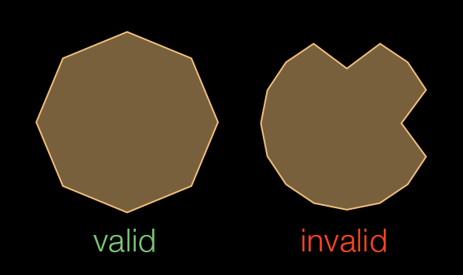
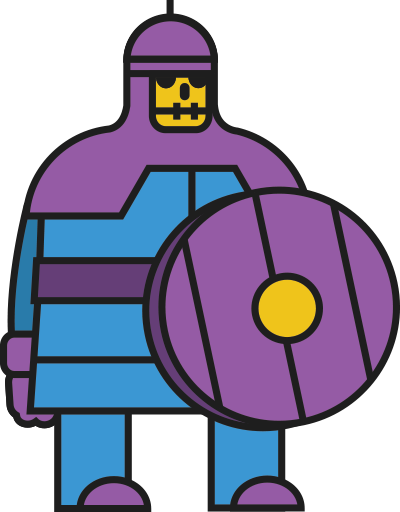

Multi-Element Collisions
This tutorial covers an important topic regarding Corona’s physics engine — in specific, advanced tactics involving
First, we should define what a
Why Multi-Element Bodies?

This is a rehash for physics veterans, but basically, in Box2D, all
- Must be a polygonal shape of eight sides maximum.
- Must not include any concave angles.
This is fine for a body that you can define as a standard, convex polygon, but what about a body that can’t be traced with only convex angles or can’t be represented accurately in eight sides or less?
The solution is a
Per-Element Collision Control
If you’ve worked with
Multi-Element Capabilities
Multi-element bodies have some unique capabilities which can help you overcome various design hurdles, including:
Individual elements can have unique collision filters. This is useful if you want certain parts of your
multi-element body to collide/react with some but not all other physical objects in the world.Individual elements can be set as a sensors, allowing all other objects to pass through them while still returning a collision detection event (this method is utilized in the Allowing Jumps tutorial).
In a collision, each element can return an integer pertaining to the
order in which it was declared in the physics.addBody() function — for example, the first element declared will return1, the second2, etc. This allows you to pinpoint which part of amulti-element body is involved in a collision event and take the appropriate action.
Multi-Element Limitations
Despite the above capabilities, the following limitations remain:
Once a collision filter is declared for an element or body, it cannot be changed during runtime.
If an element is declared as a sensor, it cannot individually be changed to a
non-sensor (or vice-versa) during runtime — only the entire body can be swapped between behavior as a sensor or anon-sensor after it has been created.
Overcoming Limitations
Never fear, this tutorial will show you how to overcome both of the above limitations! We’ll do this using the physics contact, a feature which allows you to predetermine, via the use of a pre-collision listener, what happens when the collision actually occurs. Predominantly, this is useful for voiding a collision entirely based on your app logic and we’ll extend this method to

A possible usage case for this would be a multi-element “armored enemy” like the image shown here. In a theoretical game, the hero must attack this enemy and destroy individual pieces of its armor (helmet, chest plate, shield, etc.) to break through to the bones within. A scenario such as this requires a unique approach because the “traditional” methods are prone to these issues:
While the enemy could potentially be constructed from several individual and distinct bodies, then assembled using weld joints, this creates another level of complexity in the enemy assembly, and it may cause some degree of physical instability which is inherent even with weld joints.
As noted above, individual elements of a
multi-element body can be initially set as sensors (or not), but it’s“all or nothing” when using object.isSensor on the body after creating it. Thus, you can not set just one “destroyed” armor piece as a sensor while ensuring the others retain physical response, for example causing projectiles to physically bounce off.
For these reasons, we turn to the physics contact in conjunction with
Assembling the Body
Let’s examine how to create a
- Display the enemy object on the screen.
- Define the shapes for the body, starting at the head and basically working down for convenience.
- Add the physical body and pass each shape to the physics.addBody() call in an ordered list of elements.
-- Set up physics engine
local physics = require( "physics" )
physics.start()
physics.setDrawMode( "normal" )
physics.setGravity( 0,0 )
local armoredSkeleton = display.newImageRect( "skeleton.png", 200, 256 )
armoredSkeleton.x, armoredSkeleton.y = display.contentCenterX, display.contentCenterY
local armorPieces = {
helmet = { -38,-103,-26,-118,-15,-120,-4,-118,8,-103,8,-63,-38,-63 },
mantle = { -68,-55,-52,-63,20,-63,37,-55,47,-44,55,-20,-89,-20,-80,-44 },
chest = { 44,-44,54,54,-85,54,-76,-44 },
shield = { 88,-10,98,13,86,65,98,42,66,80,41,86,41,-33,66,-28 },
faulds = { 48,54,53,80,-87,80,-85,54 },
legLeft = { -34,80,-34,127,-72,127,-72,80 },
legRight = { 43,80,43,127,5,127,5,80 }
}
physics.addBody( armoredSkeleton, "dynamic",
{ shape = armorPieces["helmet"] },
{ shape = armorPieces["mantle"] },
{ shape = armorPieces["chest"] },
{ shape = armorPieces["shield"] },
{ shape = armorPieces["faulds"] },
{ shape = armorPieces["legLeft"] },
{ shape = armorPieces["legRight"] }
)
local armorStates = { true, true, true, true, true, true, true }
Note that on line 30, we also declare a simple armorStates table to keep track of the “state” of each individual armor object. This will be used to determine if a particular element is true.

If you set the physics draw mode to "hybrid" (line 4) and run this code, the skeleton will look something like the image here. Note that some of the armor pieces overlap other pieces — that is perfectly acceptable in this scenario because the player will still need to destroy individual pieces
The order of declaration of body elements
Pre-Collision Listener
Next, we’ll declare the basic pre-collision listener. This type of listener must be used if we intend to utilize the physics contact, because we’ll be telling Corona to manage the collision state immediately before it occurs, not when it occurs.
local function skeletonHit( self, event )
print( event.selfElement )
end
armoredSkeleton.preCollision = skeletonHit
armoredSkeleton:addEventListener( "preCollision" )
This function accomplishes just the basics. Anything that collides with the skeleton will return the corresponding integer of the specific body element as event.selfElement, according to the order in which they were declared. So, because we declared the helmet as the first element, a collision involving it will return 1. A collision with the mantle will return 2, a collision with the chest will return 3, and so forth.
Using the Physics Contact
At this point, the skeletonHit() function will tell us which specific armor piece is involved in a collision, but nothing more. That doesn’t reach our goal, so let’s expand it to access the armorStates table and determine if a collision should occur or not:
local function skeletonHit( self, event )
-- Dictate the collision behavior based on the armor element state
if ( armorStates[event.selfElement] == false ) then
-- Use physics contact to void collision
event.contact.isEnabled = false
else
-- Set the associated armor element state to "destroyed"
armorStates[event.selfElement] = false
end
end
armoredSkeleton.preCollision = skeletonHit
armoredSkeleton:addEventListener( "preCollision" )
Basically, if the armor element is “destroyed” in our game logic (line 35), we can use the physics contact (event.contact) to instruct Corona to void the collision entirely, making it appear as if that element doesn’t even exist (our ultimate purpose). In contrast, if the armor element is still intact, we allow the collision to occur naturally but we toggle its state to “destroyed” by setting its index within the armorStates table to false — this will ensure that the armor element does not cause a physical response upon the next collision event.
That’s basically it! With this code, each individual armor piece can be toggled from an active state to an inactive state, letting you control your game logic at a
If you really want to get creative, consider expanding this concept to
One way to accomplish this is to use integer health values true/false)armorStates table. Note that we set a higher value for the chest piece (third value) compared to weaker pieces like the legs
local armorStates = { 10, 5, 20, 15, 8, 5, 5 }
Next, adjust the skeletonHit() function to handle integers instead of boolean true/false values:
local function skeletonHit( self, event )
-- Dictate the collision behavior based on the armor element state
if ( armorStates[event.selfElement] == 0 ) then
-- Use physics contact to void collision
event.contact.isEnabled = false
else
-- Subtract 1 from the armor piece's health value
armorStates[event.selfElement] = armorStates[event.selfElement] - 1
end
end
Essentially, on line 35, instead of checking for a value of false, we check for a 0 —1 from the piece’s health instead of setting it to false as in the original version.
Yet another creative option is to detect collision forces upon the skeleton’s armor, dealing more damage based on how hard/fast a projectile strikes a piece of armor. This method is outlined in more detail in the Uniqueness of Post-Collisions tutorial.
Conclusion
As you’ve learned in this tutorial,
Character art in this tutorial is courtesy of Ponywolf, creator of amazing